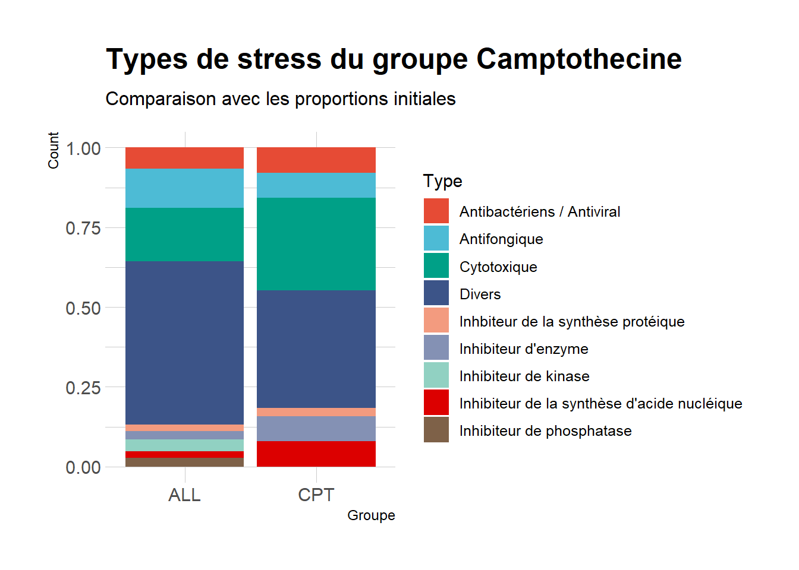

Chapter 6 Classification des stress (suite)
library(tidyr)
library(stringr)
library(FactoMineR)
library(mclust)
library(umap)
library(ggplot2)
library(ggrepel)
library(RColorBrewer)
library(hrbrthemes)
library(viridis)
library(ggsci)6.1 Caractérisation des 18 groupes de stress
for (i in seq(1,18)) {
cat("\n")
print(paste0("STRESS DE LA CLASSE ", i, " :"))
print(gg[gg$classe == i,]$name)
}##
## [1] "STRESS DE LA CLASSE 1 :"
## [1] "methotrexate_250um"
## [2] "methotrexate_125um"
## [3] "acriflavinium hydrochloride_250um"
## [4] "nitromide_1000um"
## [5] "lovastatin_154.5um"
## [6] "methotrexate_500um"
## [7] "thiabendazole_500um"
## [8] "caspofungin_50nm"
## [9] "atorvastatin_125um"
## [10] "dyclonine_500um"
## [11] "embelin_125um"
## [12] "mebendazole_1000um"
## [13] "formestane_1000um"
## [14] "tomatine_62.5um"
## [15] "phenothrin_1000um"
## [16] "semustine_62.5um"
## [17] "mechlorethamine_62.5um"
## [18] "lefunamide_250um"
## [19] "aklavin hydrochloride_250um"
## [20] "emodin_1000um"
## [21] "chlorambucil_1000um"
## [22] "5-fluorouracil_125um"
## [23] "nimustine_1000um"
## [24] "lovastatin_62.5um"
## [25] "atorvastatin_62.5um"
## [26] "dyclonine_250um"
## [27] "alverine citrate, 30ul total up/dn_500um"
## [28] "methotrexate, 30ul total up/dn_250um"
## [29] "alverine citrate, 60ul total up/dn_500um"
## [30] "methotrexate, 60ul total up/dn_250um"
## [31] "paraquat_2000um"
## [32] "paraquat_5000um"
##
## [1] "STRESS DE LA CLASSE 2 :"
## [1] "5-fluorouracil_19.2um"
## [2] "benomyl_27.6um"
## [3] "hygromycin_0.4um"
## [4] "clotrimazole_2um"
## [5] "ketoconazole_1um"
## [6] "miconazole_50nm"
## [7] "amphotericin B_10um"
## [8] "hydroxyurea_50000um"
## [9] "progesterone_250um"
## [10] "cisplatin_125um"
## [11] "estradiol_1000um"
## [12] "5-fluorouracil_4.8um"
## [13] "miconazole_25nm"
## [14] "clozapine_125um"
## [15] "carmustine_31.25um"
## [16] "fenpropimorph_1.65nm"
## [17] "mitoxanthrone hydrochloride_50um"
## [18] "mechlorethamine_50um"
## [19] "mitotane_100um"
## [20] "daunorubicin_125um"
## [21] "chlorambucil_800um"
## [22] "5-fluorocytosine_15.6um"
## [23] "RIL1 (Biomol)_50ug/ml"
## [24] "alverine citrate_500um"
## [25] "brefeldin A_1000um"
## [26] "novobiocin_1000um"
## [27] "rhizoxin_200um"
## [28] "gossypol_1000um"
## [29] "fenpropimorph_0.4nm"
## [30] "splitomicin_500um"
## [31] "splitomicin_250um"
## [32] "cisplatin_31.25um"
## [33] "haloperidol_250um"
## [34] "terbinafine_7.2um"
## [35] "haloperidol_125um"
## [36] "PP2_100um"
## [37] "wortmannin_50um"
## [38] "indirubin_100um"
## [39] "damnacanthal_200um"
## [40] "damnacanthal_100um"
## [41] "bay 11-7082_12.5um"
## [42] "phosphatase inhibitor_100um"
## [43] "PP1_100um"
## [44] "cantharidin disodium_100um"
## [45] "tyrphostin_200um"
## [46] "ansamitocin_500um"
## [47] "thio-tepa_1000um"
## [48] "podophyllotoxin_200um"
## [49] "aminopterin_125um"
## [50] "ciclopirox olamine_1000um"
## [51] "aphidicolin glycinate_125um"
## [52] "adenophostin A_500um"
## [53] "terreic acid_1000um"
## [54] "thiolutin_7.81um"
## [55] "chloroxine_3.91um"
## [56] "trifluoperazine dihydrochloride_31.25um"
## [57] "vitamin K3_15.63um"
## [58] "fusarubin_250um"
## [59] "streptovitacin_62.5um"
## [60] "menadione epoxide_62.5um"
## [61] "trichostatin A_3.91um"
## [62] "phenanthroline monohydrochloride_62.5um"
## [63] "BCNU_62.5um"
## [64] "phloretin_500um"
## [65] "borrelidin_15.63um"
## [66] "4-isopropyltropolone_15.63um"
## [67] "ciclopirox olamine_1.95um"
## [68] "psoralen_62.5um"
## [69] "AG 1478 (Biomol)_100um"
## [70] "nsc95397_125um"
## [71] "telomerase inhibitor ix (Biomol)_500um"
## [72] "zaluzanin C_1000um"
## [73] "cyclamin_62.5um"
## [74] "distamycin A_250um"
## [75] "CID 403818_125um"
## [76] "thujaplicin alpha_15.63um"
## [77] "papuamide B_0.7ug/ml"
## [78] "monastrol_100um"
## [79] "cantharidin_200um"
## [80] "NaF_20000um"
## [81] "NaF_10000um"
## [82] "benzaldehyde_0.003%"
## [83] "bisphenol_8.75um"
## [84] "PP1_3um"
## [85] "PP2_3um"
##
## [1] "STRESS DE LA CLASSE 3 :"
## [1] "37 degrees C" "nystatin_5um"
## [3] "cantharidin_250um" "caracemide_62.5um"
## [5] "idarubicin_15.63um" "aclacinomycin A_15.63um"
## [7] "calvatic acid_15.63um" "bouvardin_1000um"
## [9] "melphalan_200um" "juglone_200um"
## [11] "bostrycoidin_100um" "coralyne_100um"
## [13] "neomycin sulfate_100um" "lipoxamycin_0.975um"
## [15] "verrucarin A_7.5nm" "PABA_500um"
## [17] "emodin_500um" "reserpine_100um"
## [19] "filipin_100um" "dimethylellipticinium_100um"
## [21] "RO 106-9920 (Calbio)_125um" "dianemycin_250um"
## [23] "cycloheximide_0.03nm" "bruceantin_0.98um"
## [25] "cinerubin_12.5um" "triphenyltin_3.13um"
## [27] "AG 957 (Biomol)_500um" "AG 1387 (Biomol)_250um"
## [29] "carbendazine_62.5um" "staurosporine_6.25um"
## [31] "alizarin_125um" "lawsone_500um"
## [33] "biochanin A_3.95um" "quercetin_3.95um"
## [35] "ferulic acid_3.95um" "resveratrol_2000um"
## [37] "nerol_1000um" "5-fluorouracil_38.4um"
## [39] "curcumin_125um" "rotenone_250um"
## [41] "sirtinol_50um" "xanthohumol_6.2um"
## [43] "cantharidin analog_250um" "cantharidin analog_125um"
## [45] "curcumin_500um" "parkinson-inducing peptide_250um"
## [47] "L-dopa_12.5ug/ml"
##
## [1] "STRESS DE LA CLASSE 4 :"
## [1] "miconazole_100um" "doxorubicin_62.5um"
## [3] "lapachol_1000um" "itraconazole_35.4um"
## [5] "itraconazole_17.7um" "itraconazole_8.8um"
## [7] "miconazole_0.2um" "fluconazole_130.6um"
## [9] "anisomycin_62.5um" "cloxyquin_15.6um"
## [11] "itraconazole_37.6um" "itraconazole_4.4um"
## [13] "sulconazole nitrate_0.24um" "econazole nitrate_0.24um"
## [15] "bufexamac_1000um" "caspofungin_10nm"
## [17] "fenpropimorph_4.7um"
##
## [1] "STRESS DE LA CLASSE 5 :"
## [1] "nocodazole_2ug/ml"
##
## [1] "STRESS DE LA CLASSE 6 :"
## [1] "20 degrees C"
## [2] "DMSO 1%_1um"
## [3] "DMSO 2%_2um"
## [4] "DMSO 4%_4um"
## [5] "fenbendazole_500um"
## [6] "mycophenolic acid_500um"
## [7] "trichlormethine_1000um"
## [8] "semustine_125um"
## [9] "latrunculin_2.8um"
## [10] "latrunculin_1.8um"
## [11] "parthenolide_125um"
## [12] "sanguinarine sulfate_250um"
## [13] "solasodine_250um"
## [14] "emodin_250um"
## [15] "mechlorethamine_500um"
## [16] "helenine_250um"
## [17] "thiabendazole_250um"
## [18] "quinacrine hydrochloride_1000um"
## [19] "aklavin hydrochloride_500um"
## [20] "citrinin_1um"
## [21] "5-fluorouracil_76.9um"
## [22] "estradiol_2500um"
## [23] "hexestrol_125um"
## [24] "dieldrin_1000um"
## [25] "amitriptyline hydrochloride_250um"
## [26] "benztropine_1um"
## [27] "ipriflavone_1000um"
## [28] "usnic acid_500um"
## [29] "methoxyvone_1000um"
## [30] "beclomethasone dipropionate_1000um"
## [31] "bisacodyl_1000um"
## [32] "bathophenanthroline disulfonate_100um"
## [33] "BCS_200um"
## [34] "BCS_100um"
## [35] "floxuridine_80000um"
## [36] "floxuridine_40000um"
## [37] "lovastatin_77.2um"
## [38] "bithionol_75um"
## [39] "bromocriptine mesylate_1000um"
## [40] "5-fluorouracil_38.5um"
## [41] "leucovorin_500um"
##
## [1] "STRESS DE LA CLASSE 7 :"
## [1] "latrunculin_4.2um" "clotrimazole_1um"
##
## [1] "STRESS DE LA CLASSE 8 :"
## [1] "lapachol_500um"
##
## [1] "STRESS DE LA CLASSE 9 :"
## [1] "aklavin hydrochloride_125um"
## [2] "estradiol acetate_500um"
## [3] "estradiol propionate_500um"
## [4] "estrone acetate_1000um"
## [5] "piperidolate hydrochloride_1000um"
## [6] "tolfenamic acid_1000um"
## [7] "domperidone_1000um"
## [8] "phenoxybenzamine hydrochloride_500um"
## [9] "fluconazole_65.3um"
##
## [1] "STRESS DE LA CLASSE 10 :"
## [1] "metergoline_250um" "propiomazine maleate_500um"
## [3] "clozapine_500um" "drofenine hydrochloride_750um"
##
## [1] "STRESS DE LA CLASSE 11 :"
## [1] "chlorzoxazone_1000um" "sodium meclofenamate_1000um"
## [3] "mechlorethamine_250um" "danthron_1000um"
## [5] "dichlofenac sodium_1000um" "diflunisal_1000um"
## [7] "prazosin hydrochloride_1000um" "promethazine hydrochloride_250um"
## [9] "promazine hydrochloride_125um" "reserpine_125um"
## [11] "spironolactone_500um" "pyrimethamine_1000um"
## [13] "triamterene_500um" "tolnaftate_250um"
## [15] "trimeprazine tartrate_250um" "aminophenazone_250um"
## [17] "mecysteine hydrochloride_62.5um" "merbromin_62.5um"
## [19] "sulfanilamide_62.5um" "ursodiol_1000um"
## [21] "naringenin_1000um"
##
## [1] "STRESS DE LA CLASSE 12 :"
## [1] "nocodazole_6.6um" "trichlormethine_500um"
## [3] "amphotericin B_0.31um" "ketoconazole_2um"
## [5] "hexetidine_31.25um" "thiram_15.6um"
## [7] "glafenine_1000um" "5,6-dihydroxyflavone_250um"
## [9] "nalidixic acid_1000um" "fenoprofen_250um"
## [11] "fluconazole_32.6um" "pyrithione zinc_1.95um"
## [13] "ciclopirox olamine_3.9um" "chloroacetoxyquinoline_3.9um"
## [15] "exalamide_62.5um" "probucol_1000um"
## [17] "aminacrine_250um" "berberine chloride_125um"
## [19] "flufenamic acid_62.5um" "fenbendazole_250um"
## [21] "fendiline hydrochloride_125um" "flunarizine hydrochloride_93.8um"
## [23] "fenbufen_500um" "meclocycline sulfosalicylate_375um"
## [25] "thyronine_250um" "ethoxyquin_250um"
## [27] "mefenamic acid_500um" "citropten_750um"
## [29] "piperine_250um" "flufenamic acid_31.25um"
## [31] "protoveratrine B_10000um" "suxibuzone_1000um"
## [33] "chrysin_500um" "ethaverine hydrochloride_500um"
## [35] "droperidol_1000um" "mebendazole_500um"
## [37] "fenofibrate_500um" "metampicillin_1000um"
## [39] "niflumic acid_1000um" "PABA_1000um"
## [41] "ketoconazole_0.5um" "tolnaftate_125um"
## [43] "anisomycin_31.25um" "hexetidine_15.6um"
## [45] "cloxyquin_7.8um" "exalamide_31.25um"
## [47] "econazole_0.12um" "azobenzene_1000um"
## [49] "piromidic acid_1000um" "cisplatin_1000um"
## [51] "proadifen hydrochloride_500um" "estradiol diacetate_1000um"
## [53] "cisplatin_62.5um" "fluconazole_31.25um"
## [55] "amphotericin B_0.62um" "fenpropimorph_2.3um"
## [57] "fenpropimorph_1.2um"
##
## [1] "STRESS DE LA CLASSE 13 :"
## [1] "nicardipine hydrochloride_500um"
## [2] "colchicine_250um"
## [3] "pimethixene maleate_125um"
## [4] "mitoxanthrone hydrochloride_250um"
## [5] "nitrendipine_500um"
## [6] "paromomycin sulfate_500um"
## [7] "rutilantin_500um"
## [8] "pimpinellin_500um"
## [9] "dimercaptopropanol_500um"
## [10] "osajin_1000um"
## [11] "amoxepine_500um"
## [12] "oxethazine_250um"
## [13] "perillic acid_250um"
## [14] "4,6-dichloroindole-2-carboxylic acid_1000um"
## [15] "paroxetine hydrochloride_250um"
## [16] "benzyl benzoate_1000um"
## [17] "clofoctol_1000um"
## [18] "bromhexine hydrochloride_500um"
## [19] "fenpropimorph_8nm"
## [20] "hydroxyurea_100000um"
## [21] "hydroxyurea_25000um"
## [22] "5-fluorouridine_95um"
## [23] "5-fluorouridine_47.5um"
## [24] "5-fluorouridine_23.8um"
## [25] "fluconazole_16.3um"
## [26] "itraconazole_2.2um"
## [27] "parthenolide_1000um"
## [28] "mycophenolic acid_125um"
## [29] "teniposide_500um"
## [30] "mitomycin c_1000um"
## [31] "methoxsalen_500um"
## [32] "tetrandrine_1000um"
## [33] "amsacrine_500um"
## [34] "caffeine_2000um"
## [35] "camptothecin_500um"
## [36] "cytarabine_2000um"
## [37] "dicumarol_1000um"
## [38] "thiotepa_1000um"
##
## [1] "STRESS DE LA CLASSE 14 :"
## [1] "cantharidin_100um" "mitoxanthrone_62.5um"
## [3] "paclitaxel_250um" "rapamycin_4.88nm"
## [5] "allyl disulfide_0.06%" "norcantharidin_2500um"
## [7] "5-fluorouracil_76.8um" "rapamycin_5nm"
## [9] "allyl disulfide_0.016%" "latrunculin_1.95um"
## [11] "cycloheximide_100um" "chemical diversity labs 6842_62um"
## [13] "chemical diversity labs 6842_31um" "chemical diversity labs 218_250um"
## [15] "chemical diversity labs 218_125um" "chemical diversity labs 41_500um"
## [17] "chemical diversity labs 41_250um" "chemical diversity labs 246_62um"
## [19] "chemical diversity labs 246_31um" "chemical diversity labs 275_125um"
## [21] "chemical diversity labs 275_62um" "chemical diversity labs 232_62um"
## [23] "chemical diversity labs 232_31um" "meclizine hydrochloride_250um"
## [25] "norcantharidin_100um" "1,4-dimethylendothall_100um"
## [27] "1,4-dimethylendothall_1000um" "1,4-dimethylendothall_500um"
## [29] "phenolphthalein_250um" "benfluorex hydrochloride_250um"
## [31] "wiskostatin_19um" "alizarin_66um"
## [33] "FK506_100um" "FK506_50um"
## [35] "allyl sulfide_0.12%" "allyl disulfide_0.01%"
## [37] "propyl disulfide_0.49%" "papuamide B_0.37ug/ml"
## [39] "papuamide B_0.25ug/ml" "papuamide B_0.125ug/ml"
## [41] "1,8-nonadiene_0.99%" "rapamycin_6nm"
## [43] "rapamycin_9nm" "calyculin A_2.5um"
##
## [1] "STRESS DE LA CLASSE 15 :"
## [1] "tryptanthrin_250um"
##
## [1] "STRESS DE LA CLASSE 16 :"
## [1] "latrunculin_3.91um"
##
## [1] "STRESS DE LA CLASSE 17 :"
## [1] "wiskostatin_29um"
##
## [1] "STRESS DE LA CLASSE 18 :"
## [1] "DNA protein kinase inhibitor" "1,3-diallylurea_10000um"
## [3] "1,7-octadiene_0.25%" "chemical diversity labs 14a_6.2um"
## [5] "chemical diversity labs 14f_6.2um" "chemical diversity labs 1c10_1.5um"
## [7] "chemical diversity labs 1c10_0.75um" "chemical diversity labs 3f2_12.5um"
## [9] "CID 144303_1.9um" "CID 604586_31.25um"
## [11] "CID 622648_31.25um" "CID 630688_250um"
## [13] "CID 632839_62.5um" "CID 652287_500um"
## [15] "CID 678146_1.9um" "CID 683517_15.6um"
## [17] "CID 621889_125um" "CID 688028_1.9um"
## [19] "CID 693573_250um" "CID 693632_62.5um"
## [21] "CID 697443_0.95um" "1,3-diallylurea_5000um"
## [23] "FeCl4_2500um" "CuSO4_10000um"
## [25] "ZnCl2_468.8um" "CoCl2_1250um"
## [27] "sodium arsenite_625um" "HgCl2_7.81um"
## [29] "K2Cr2O7_6.25um" "MPP+_500ug/ml"
## [31] "MPP+_250ug/ml" "mitomycin c_50um"
## [33] "potassium disulfite_2500um" "curcumin_150um"
## [35] "thimerosal_125nm" "motuporamine_7.5um"
## [37] "motuporamine_15um" "myriocin_0.15ug/ml"
## [39] "aureobasidin A_0.02ug/ml"6.2 Enrichissement de classe
Es ce que le groupe de stress contenant la camptothecine est enrichit en un ou plusieurs types de stress ?
gg[gg$name == "camptothecin_500um",]## x y classe name
## camptothecin_500um -1.351724 1.212643 13 camptothecin_500umstress_campto <- gg[gg$classe == gg[gg$name == "camptothecin_500um",]$classe,]$name
saveRDS(stress_campto, file = "data/stress_campto.rds")gg_campto = data.frame(x = stress_campto, Type = stress_campto %>% sapply(function(y){
tab$Type[y == tab$x]
}))
full_count = data.frame(Type = tab$Type %>% unique(), Count = tab$Type %>% unique() %>% sapply(function(y){
tab$x[tab$Type == y] %>% length()
}), groupe = rep("ALL", tab$Type %>% unique() %>% length()))
campto_count = data.frame(Type = tab$Type %>% unique(), Count = tab$Type%>% unique() %>% sapply(function(y){
gg_campto$x[gg_campto$Type == y] %>% length()
}), groupe = rep("CPT", tab$Type %>% unique() %>% length()))
gg_compar = full_count %>% rbind(campto_count)
ggplot(gg_compar)+
aes(x = groupe, fill = Type, y = Count) +
geom_col(position = "fill")gg_campto = data.frame(x = stress_campto, Type = stress_campto %>% sapply(function(y){
tab$Type_merge[y == tab$x]
}))
full_count = data.frame(Type = tab$Type_merge %>% unique(), Count = tab$Type_merge %>% unique() %>% sapply(function(y){
tab$x[tab$Type_merge == y] %>% length()
}), groupe = rep("ALL", tab$Type_merge %>% unique() %>% length()))
campto_count = data.frame(Type = tab$Type_merge %>% unique(), Count = tab$Type_merge %>% unique() %>% sapply(function(y){
gg_campto$x[gg_campto$Type == y] %>% length()
}), groupe = rep("CPT", tab$Type_merge %>% unique() %>% length()))
gg_compar = full_count %>% rbind(campto_count)
ggplot(gg_compar)+
aes(x = groupe, fill = Type, y = Count) +
#scale_fill_ipsum() +
#scale_fill_brewer(palette = "Pastel1")+
#scale_fill_viridis_d(option = "A")+
scale_fill_npg()+
geom_col(position = "fill") +
labs(title = "Types de stress du groupe Camptothecine", x = "Groupe", subtitle = "Comparaison avec les proportions initiales")+
theme_ipsum()
Mesure de l’enrichissement dans chacune des catégories :
On réalise un test de fisher exact pour les 16 catégories (loi hypergéométrique)
alpha = 0.05
tests = NULL
for (categorie in full_count$Type) {
m = full_count$Count[full_count$Type == categorie] # boules blanches totales
x = c(campto_count$Count[campto_count$Type == categorie]:m) # boules blanches tirées
n = full_count$Count[full_count$Type != categorie] %>% sum() # boules totales
k = campto_count$Count %>% sum() # nb tirage
mat = matrix(c(campto_count$Count[campto_count$Type == categorie],
k-campto_count$Count[campto_count$Type == categorie],
m-campto_count$Count[campto_count$Type == categorie],
n-(k-campto_count$Count[campto_count$Type == categorie])),
nrow = 2)
tests = c(tests, dhyper(x, m, n, k, log = FALSE) %>% sum())
#équivaut à fisher.test(mat)$p.value
}
#Correction de Bonferonni
#tests = tests / (full_count$Type %>% length())
tf = data.frame(categories = full_count$Type, p_val = tests)
tf[tf$p_val < alpha,]## categories p_val
## 1 Cytotoxique 0.03581433
## 7 Inhibiteur de la synthèse d'acide nucléique 0.03313218Ce groupe est enrichis en composants cyctotoxiques et inhibiteurs de la synthèse d’acides nucléiques. Ces deux points coincident avec les trouvailles de la GO enrichissement.